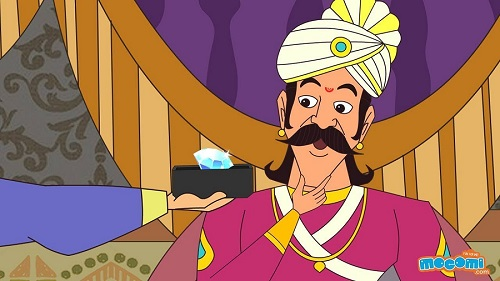

Severed Nose
A meanest person can also have humanity
This time Vikram got very angry with him. He again came after him, caught
him, put him on his shoulder and started walking. Vikram said angrily - "You
34
deceive me, Vaitaal? I will cut your head. Why do you run all the time?"
Vaitaal first didn't say anything, but after a while he said - "Why are you so
angry?" Vikram said - "Why do you run away?" I run because of your correct
answer. What was our condition? Do you remember? That you will not speak at
all." Vikram said - "But when you talk about justice, then I have to speak.
You know that it is my nature." Vaitaal said - "Then running away is my
nature." and he laughed heartily. "OK Listen now, I tell you a story just to
pass time." Vaitaal started his story and Vikram listened quietly.
Vaitaal said - "This time the story is very strange, and you have to tell me
the correct judgment, otherwise your head will split and scattered away in
pieces, you know that. This is my Shaap to you " Vikram nodded silently.
Vaitaal started - "Once upon a time, there lived a rich man in Avanteepur. His
name was Gunvant. He was very religious. His wife was very beautiful but was
very wicked. She gave birth to a daughter who was from some other man, and
that is why she was more beautiful. After some time she grew up and became
like her mother. Her name was Ratnaavatee. Her father started looking a boy
for her, but in the meantime, she had illegal relations with her servant.
Hearing this Gunvant sacked his servant. He went away and started living at
another place.
But Ratnaavatee still continued to see him. She used to go in night and come
back in night. Only her mother knew about this affair. In the meantime
Gunvant had searched a good match for her and married her to him. Thus she
went to live with her husband, but she could not break her relationship with
her servant. She took her maid in confidence and continued to visit him in the
night. The maid helped her brother also to meet Ratnaavatee.
After a while her husband came to know about this, he sacked the maid. Now
it had been difficult for Ratnaavatee to meet her lover, but one night she got
this chance. She went there and told him the story. He advised her that she
should wait for sometime, and when the situation is better, she might come
again. Her husband knew everything, so he managed to give that servant
poison. He took the poison mixed with food and slept. In sleep, he died. On
the same night, Ratnaavatee went to meet him.
On the way a thief saw an ornament-laden woman going in dark, so he
followed her. When she had entered in the servant's house, he watched her
35
from hiding. Now, under whichever tree the thief was standing, a Vaitaal lived
on that tree. He also saw Ratnaavatee going inside the house and fell in love
with her instantly. He thought why shouldn't he enter the servant's body and
enjoy with Ratnaavatee. So he entered the dead body of the servant.
Ratnaavatee had come to him. She met with her lover. In excitement he bit
her nose with his teeth. After biting her, Vaitaal went out of the servant's
body, but the piece of her nose still remained in his dead body's mouth.
Ratnaavatee cried with pain. Besides she saw her lover dead. Seeing her lover
dead, Ratnaavatee got confused and ran away from there. The thief was also
watching, he also got frightened. He didn't leave Ratnaavatee, he still
followed her. Ratnaavatee came back to her own house and started crying in
front of her husband's room. Her husband got up, his other family members
also got up. She said that her husband had bit her nose. Ratnaavatee's
husband was giving explanations but nobody was listening to him
The matter went to king's soldiers. Ratnaavatee and her husband were
presented in king's court. There she blamed her husband for her bitten nose.
The king got angry and ordered to hang her husband. When the thief heard
this, he went to the king and told him everything and said - "If you will see
the dead body's mouth, you will find the piece of her bitten nose in his
mouth." The king sent his people there, and indeed they found the piece in his
mouth. The king released Ratnaavatee's husband, and expelled Ratnaavatee
after shaving her head.
Vaitaal said - "Now you do justice, who was at fault, and who stayed on his
good path?" Vikram didn't reply. Seeing him silent, Vaitaal said to him - "OK,
I tell you another story. In Indraapur named city lived a very rich religious
man named Mahaadhan. He had a son whose name was Shreedhan. He was
very wicked. Fed up with his wickedness, Mahaadhan had expelled him from
his house so he went to Chandra Nagar.
There lived a rich man named Hemgun whose daughter Chandramukhee was
very beautiful. Hemgun was in the process of searching a good boy for her,
and Shreedhan was in search of money.
One day he disguised as a poor and went to Hemgun and told that he was
robbed by robbers while he was going for trading. Now he doesn't have a
single penny. The rich man pitied him and let him stay in his palace. Hemgun
36
told everything to his wife. His wife thought why not they should marry their
daughter to him. She told this to her husband, the man liked the proposal and
he talked to Shreedhan.
Shreedhan got very surprised to hear this, because he came here only for
some money while that man wanted to marry his daughter to him. He
immediately got ready to marry her. So they were married and he started
enjoying life with his wife. Hemgun had given him lots of dowry. After some
time, Candramukhee asked him - "Will you not go home?" Shreedhan said -
"Yes, I will go. In fact I just forgot everything in your love."
Shreedhan started for his home. At the time of going from there, he got
more wealth. He was not a good man, so as he was passing through a lonely
forest, he threw Chandramukhee in a well, and went away with all the wealth.
Now Shreedhan came to another kingdom. There he started gambling with that
money.
Chandramukee got stunned to see the behavior of Shreedhan. Luckily the well
was dry. As she fell down her head got hurt and she became unconscious.
When she gained consciousness, she started crying. A traveler was passing by,
he heard a woman's cry, but couldn't see anybody around. Then he peeped in
the well and took her out of the well.
Chandramukhee introduced herself to him and told him that she was going with
her husband that some thieved surrounded them. They took her husband away
and threw her in this well. The traveler was very kind, he took her to her
father's house. She told the same story to her family also what she told to
that traveler. Chandramukhee just started passing her time there, and
Shreedhan was enjoying his money.
One day came when he had nothing nothing in his pocket, so he started
begging. He came to Hemgun's city. Although he did not want to go to Hemgun
but still he tried to find out about him and his family. He was surprised to
know that Chandramukhee was still alive. He got scared. Later he came to
know that thieves took away Chandramukhee's husband, threw her in a well
and some kind traveler brought her here. He got very surprised at his wife's
behavior.
37
Vikram, Now you see Shreedhan's drama. He was already poor, he entered
Hemgun's house. In spite of his bad condition, Hemgun recognized him. He was
very surprised to see him. Shreedhan told him that somehow he was coming
escaping from thieves after four days of crossing the forest.
Hemgun let him stay with respect for some time, and then later bade
farewell. e again gave lots of money to him. This time also he behaved in the
same way. This time he didn't throw Chandramukhee in well, but he killed her
and went away with all the wealth."
Now you tell, that in these two stories, who is more respectable? The just
king of the first story or Hemgun of the second story? One did justice and
the other one trusted his son-in-law every time."
Vikram said - "These are not important in any way. In the first story, I
consider the thief honest and great, because if he didn't tell about the
incident, then that innocent man would have been hanged; while in the second
story, Chandramukhee is like Seetaa or Saavitree. She accepted to die by her
husband but didn't say a word against him. That is why these both are
respectable."
As the king spoke, Vaitaal laughed heartily and suddenly he disappeared from
the king's shoulder and hung upside down from the same tree. The king
Vikramaaditya again got very angry at this. He took out his sword and caught
him before he could reach the tree. Vikram said - "You again ran away?" "No,
I didn't. I am still walking with you." and he again sat on his shoulder. Vikram
started his journey again.
|